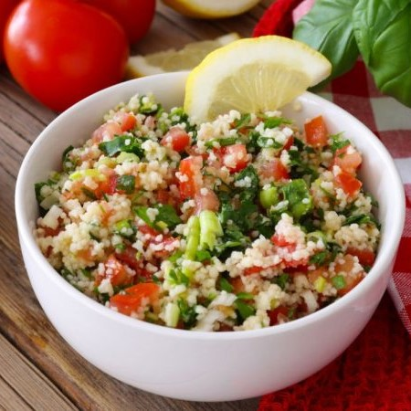

Dia a Dia
Salada Mediterrânea de Quinoa
1 xícara de chá de água
½ xícara de chá de quinoa
Sal a gosto
1 pimentão vermelho
½ cebola roxa cortada em meia-lua
½ xícara de chá de azeitonas pretas
Pimenta-do-reino a gosto
Azeite a gosto
Suco de 1 limão
15 min Fácil
Crepioca com Creme de Espinafre
1 ovo grande;
1 colher de sopa de tapioca (aquela pronta para preparo);
½ colher de sopa de farinha de amaranto (pode substituir pela farinha saudável de sua preferência);
sal a gosto.
10 min Fácil